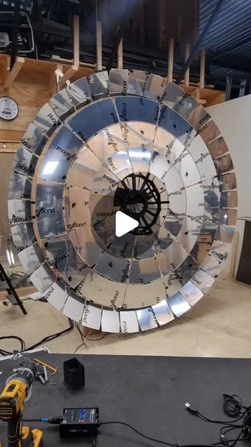

Body → Machine → Art: Real-Time Interactive Installations Anyone Can Build
Try It — Action Sketch
MediaPipe for body tracking (free, runs on webcam) → pipe data to TouchDesigner → drive visuals in Unreal or project with a $200 projector. Gallery-quality interactive art for under $500 in hardware.
Connected Posts (5)




Prompt system — run this yourself
Pasteable into Claude Code, Claude, or any agent. One-shot for the whole result, step prompts when you want to steer. Every step carries its own audit; the gap audit makes the agent find and fill what it missed.
Mission. Running this system builds a working body-reactive installation: webcam body tracking with MediaPipe (via Torin Blankensmith's TouchDesigner plugin) or a Kinect, a TouchDesigner network that turns landmarks into a particle or data visual in the style of pala3d's DATA CONTROL, optional Unreal Engine output over OSC, and a projector setup costed under the dive's $500 hardware claim. It is for an independent artist who wants gallery-grade behavior, not a demo. Done means measured motion-to-light latency, an 8-hour unattended soak without a crash, a bill of materials with receipts, and a playtest with strangers showing they understand the interaction without instructions.
1 · Deeper, not bigger
- What a top professional would do (that you didn't ask for): A creative technologist would start from the room, not the software: throw distance, projector lumens versus ambient light, where people stand, how many at once, and what happens when nobody is there (an attract mode). They would set a latency budget (under 100 ms from movement to visible change) and measure it with a high-speed phone camera, because lag is what makes interactions feel broken. They would smooth landmarks with a One Euro filter, handle tracking loss gracefully, and make the piece boot itself after a power cut. They would playtest with strangers and change the mapping until the interaction is legible in 10 seconds.
- Rawest material to start from: - torinmb/mediapipe-touchdesigner on GitHub: the plugin's .tox components, its outputs (pose 33 landmarks, hands 21 landmarks, face) and its known performance limits. - Google MediaPipe Pose Landmarker and Hand Landmarker docs (landmark indices, model variants lite/full/heavy, world versus image coordinates). - TouchDesigner documentation: the non-commercial license limits (1280x1280 output cap), Perform mode, OSC Out CHOP/DAT, Window COMP. - Unreal Engine OSC plugin docs or TouchEngine for UE. - Kinect v2 SDK or Azure Kinect body tracking docs (Azure Kinect is discontinued; check availability). - Open datasets like those pala3d visualized: NASA Exoplanet Archive tables, CERN Open Data Portal event files. - Projector spec sheets: ANSI lumens, throw ratio, input lag.
- Methods and tools: MediaPipe via the TouchDesigner plugin (webcam in, landmark CHOPs out); One Euro filter on landmark channels (min cutoff 1.0, beta 0.007 as a starting point); TouchDesigner particle systems (particlesGPU or a GLSL TOP with instancing) driven by hand and pose features (velocity, spread, height); OSC to Unreal with a Blueprint receiver if UE is used; throw-distance math (image width = distance / throw ratio); latency measured by filming an LED toggled with the hand and the projection in one 240 fps frame; Perform mode plus a startup script and OS auto-login for unattended runs; a frame-time logger (Perform CHOP) written to CSV; a data loader that maps CSV columns to particle attributes.
- What proves it right: A 240 fps phone video measuring motion-to-photon latency, median under 100 ms over 20 trials. An 8-hour soak log with frame rate never below 30 fps and zero crashes. Ten strangers in a playtest, timed from entering to first intentional interaction, with a target of under 15 seconds for at least 7. Purchase receipts summing the hardware cost against the $500 claim.
Rewritten prompt — ask for exactly that:
Help me build a body-reactive installation that would survive a gallery night, not just a demo. Stack: a USB webcam into Torin Blankensmith's MediaPipe plugin in TouchDesigner (pose and hands), a One Euro filter on landmarks, a GPU particle system whose density and flow follow hand velocity and body spread, and a mode that loads an open scientific dataset (NASA Exoplanet Archive or CERN Open Data) as particle positions, like pala3d's DATA CONTROL. Unreal Engine over OSC is optional; only add it if TouchDesigner cannot hit the look. First do the room math: wall width, projector throw ratio and lumens versus measured ambient lux, where viewers stand. Set budgets: motion-to-photon latency under 100 ms measured with a 240 fps phone video, at least 30 fps sustained, auto-restart after power loss, attract mode when no one is tracked, and graceful handling of tracking loss and multiple people. Check the TouchDesigner non-commercial license limits against my output resolution and plans to sell or exhibit. Run an 8-hour soak test with a frame-time log and a playtest with 10 strangers timed to first intentional interaction. Keep a bill of materials with real prices to test the 'under $500' claim. Return a gap report of what failed and what I could not measure.
2 · One-shot prompt
ROLE AND STANCE You are a creative technologist delivering an interactive installation to a gallery. You optimize for legibility, latency and uptime, in that order. You assume the room is too bright, the visitors do unexpected things, and the power will be cut. CONTEXT - pala3d's DATA CONTROL: NASA and CERN datasets turned into particle structures, body-controlled via Kinect through TouchDesigner into Unreal Engine, explicitly human-made. - neles0n using @blankensmithing's MediaPipe plugin in TouchDesigner (github torinmb/mediapipe-touchdesigner): webcam body and hand tracking without a Kinect. - Physical references in the dive: speaker-driven soap-film cymatics (vibra.genix; ignore its health and '4D' claims, keep the standing-wave visual) and Aedas' Al Bahar Towers, a sun-responsive mashrabiya façade reported to halve cooling load. Both are input-to-form mappings worth borrowing for interaction design. - The dive's claim: webcam, TouchDesigner and a $200 projector give gallery-quality interaction for under $500 in hardware. HARD CONSTRAINTS - Latency budget: median motion-to-photon under 100 ms. - Frame rate at least 30 fps at output resolution for 8 hours. - Must cold-boot into the piece without a keyboard (OS auto-login, TouchDesigner in Perform mode via startup script). - No recording or storage of visitor video or landmarks beyond aggregated counts; post a notice if any camera is used. - Respect TouchDesigner license tiers: non-commercial caps output at 1280x1280 and excludes paid commercial work; record which tier is used. - No liquid near powered speakers for any cymatics element. DELIVERABLES, IN ORDER 1. ground_truth.md: hardware list with prices, TouchDesigner build and license tier, MediaPipe plugin version and which models run, webcam fps at chosen resolution, projector throw ratio and lumens, room measurements and ambient lux. 2. tracking.toe network section: plugin outputs to CHOPs, One Euro filter, derived features (hand speed, arm span, centroid, person count), tracking-loss handling (fade over 1 s, never snap). 3. visual: GPU particle system mapped from features; a data mode that loads a NASA Exoplanet Archive CSV (orbital period, radius, distance) or a CERN open-data event table as particle positions and lets hands sweep through it. 4. attract mode when person count is 0 for 20 s. 5. optional ue/: Unreal project receiving OSC on a fixed port, used only if the TouchDesigner look fails a stated criterion. 6. ops/: startup script, auto-login notes, watchdog that restarts TouchDesigner if the frame-time log stops, frame-time CSV logger. 7. tests/: latency protocol and results, soak log, playtest sheet. 8. report.md. BUILT-IN GAP ANALYSIS Maintain GAPS in report.md marking VERIFIED, UNVERIFIED or FALSE with evidence: latency under 100 ms; 30 fps for 8 hours; tracking under gallery lighting (dim room, projector light on the visitor); behavior with 3+ people; legibility (strangers interact within 15 s); total hardware cost under $500; projector brightness sufficient at measured ambient lux; data mode faithful to the source dataset (spot-check 10 rows). Fill each gap by testing; list the rest with the next action. SELF-QUESTIONS - What does the piece do when two people overlap or one leaves mid-gesture? - Does projector light on the visitor's body break MediaPipe tracking? - Is latency dominated by the webcam, the model, TouchDesigner or the projector's input lag? - Would a visitor know what to do without a sign? - Does the data mode mean anything, or is it decoration with a NASA label? - What happens at hour 6 when the GPU is hot? STOP CONDITIONS Stop and ask the user before buying hardware, before using a commercial TouchDesigner license, and if tracking fails under the room's lighting after trying a different camera position and the heavy model. Do not add Unreal unless TouchDesigner fails a written criterion. RETURN FORMAT report.md with: BOM table and total, latency results (median, p90), soak summary, playtest table, license notes, GAPS with statuses, and the file tree.
3 · Step-by-step prompts
Step 1 — Ground truth: room, hardware, licenses
Goal: Measure the space and confirm what the tools actually allow before building.
Measure the installation wall (width, height), the maximum projector distance, and ambient light with a phone lux meter at the wall and where viewers will stand, at the time of day the piece will run. From the projector spec sheet, compute image width = distance / throw ratio and check it fills the wall; estimate brightness on the wall as ANSI lumens / area in square meters and compare to ambient lux (aim for at least 5x ambient). Install TouchDesigner and record the build and license tier; note the non-commercial 1280x1280 cap and commercial restrictions. Install torinmb/mediapipe-touchdesigner, record its version and which models (pose, hands, face) run, and measure webcam fps at 720p and 1080p. List hardware with real prices and links. If a Kinect is considered, check whether the model is still sold and supported. Write ground_truth.md.
Expect: ground_truth.md with room numbers, throw and brightness math, license tier, plugin version, measured fps and a priced hardware list.
Audit before moving on: Recompute the throw and brightness math independently. Fail if any price is a guess without a link, or if the license tier conflicts with the intended use; flag it for the user.
Step 2 — Tracking layer with filtering and loss handling
Goal: Turn webcam frames into stable, meaningful features.
In TouchDesigner, bring the MediaPipe plugin's pose (33 landmarks) and hand (21 landmarks per hand) outputs into CHOPs. Apply a One Euro filter per channel (start with min cutoff 1.0 and beta 0.007; implement in a Script CHOP if no built-in exists) and tune by recording jitter while standing still and lag during a fast wave. Derive features: hand speed (m/s in normalized units), arm span, body centroid, height of the highest wrist, person count. When tracking drops, hold the last values and fade influence to zero over 1 second; never snap. Test with 1, 2 and 3 people and with someone walking through the frame. Note which person the plugin tracks when several are present and whether that switches mid-gesture. Record CPU and GPU load and the plugin's reported inference time per frame.
Expect: A tracking network section with filtered feature CHOPs, a jitter versus lag tuning note, and multi-person test notes.
Audit before moving on: Plot raw versus filtered wrist x over 10 s still and 10 s waving. Fail if still jitter exceeds 1% of frame width or waving lag looks worse than 3 frames; retune beta and min cutoff.
Step 3 — Visual mapping and data mode
Goal: Build a visual whose response to the body is obvious and whose data mode is faithful.
Build a GPU particle system (particlesGPU component or a GLSL TOP with instanced geometry) at the projector's native resolution, within the license cap. Map features: hand speed drives emission and turbulence, arm span drives field width, wrist height drives color temperature, and person count spawns separate flows. Borrow the cymatics idea for an audio mode: an audio spectrum CHOP sets standing-wave patterns, without any liquid near speakers. Add a data mode: load a NASA Exoplanet Archive CSV (pl_orbper, pl_rade, sy_dist) or a CERN Open Data event table, map columns to particle position, size and color with a documented scale, and let hands push particles aside and release them back. Write the mapping in a table. Add an attract mode that animates slowly when no one is tracked for 20 s.
Expect: A visual network, a mapping table, a data mode with a documented column-to-attribute scale, and an attract mode.
Audit before moving on: Spot-check 10 dataset rows: their particles must sit where the mapping says. Fail if fps drops under 30 at output resolution; reduce particle count or resolution and record the trade-off.
Step 4 — Latency measurement and optional Unreal
Goal: Measure motion-to-photon latency and decide whether Unreal is needed.
Set up a latency test: a visible LED or phone flashlight held in the hand, and a TouchDesigner element that flips color when wrist speed crosses a threshold. Film the hand and the projection in one frame at 240 fps. For 20 trials, count frames from the start of the hand's motion to the projection change; convert to ms. Break latency down: webcam exposure and USB, plugin inference time, TouchDesigner cook time (Perform CHOP), projector input lag (spec or game mode). If the median exceeds 100 ms, try 720p input, the lite pose model, and the projector's low-latency mode. Write a criterion for adding Unreal (for example, a specific lighting or scale look TouchDesigner cannot reach at 30 fps). Only if it is met, send features over OSC (OSC Out CHOP to a fixed port) to an Unreal Blueprint and re-measure latency end to end.
Expect: tests/latency.md with 20 trials, median and p90, a breakdown, and a written Unreal decision.
Audit before moving on: Recount 5 trials from the video independently. Fail if median exceeds 100 ms after the three mitigations; report the bottleneck rather than hiding it.
Step 5 — Unattended operation and soak test
Goal: Make the piece boot itself and survive 8 hours.
Write a startup script that launches TouchDesigner with the project in Perform mode on the projector output, set OS auto-login and disable sleep, screen savers and update reboots during exhibition hours. Add a frame-time logger writing timestamp, fps, GPU temperature if available, and person count to CSV every 10 s. Add a watchdog (a small Python or PowerShell script) that restarts TouchDesigner if the CSV has not updated in 60 s. Pull the power plug and confirm the piece returns without a keyboard. Then run an 8-hour soak with the room lit as for the show, with people walking past at intervals or a looping video of people played to the webcam. Do not record or store visitor video; log only aggregates.
Expect: ops/ scripts, a cold-boot test note, and an 8-hour CSV with summary stats (min fps, crashes, restarts).
Audit before moving on: Fail if fps drops below 30 for more than 1% of samples, if any restart was needed, or if the cold boot required input. Fix and rerun the affected part of the soak.
Step 6 — Validate against oracles and write the gap report
Goal: Prove legibility, cost and stability with outside evidence.
Run a playtest with 10 people who have not seen the piece. Give no instructions and no sign. Time from entering the space to their first intentional interaction, and ask one question afterward: what did your body control? Record answers verbatim. Run the playtest under show lighting with the projector at its final position, and note any visitor who got bored or left within 30 seconds. Sum the hardware receipts against the $500 claim, listing anything already owned separately. Compile latency, soak and playtest results. Write report.md with a GAPS list marking each claim VERIFIED, UNVERIFIED or FALSE with evidence: latency, fps, cold boot, legibility, multi-person behavior, data-mode faithfulness, cost, license fit. Fix the top three gaps that block a gallery night and rerun their tests. List what remains with the next action.
Expect: report.md with a playtest table, BOM total, latency and soak summaries, GAPS and fixes.
Audit before moving on: Fail if fewer than 7 of 10 strangers interacted intentionally within 15 s and the report does not propose a mapping change. Check every number against its source file.
4 · Gap analysis and audit
You are auditing a body-reactive installation built with MediaPipe in TouchDesigner, optional Kinect and Unreal, and a projector. Inputs: ground_truth.md, the .toe project, ops/, tests/, report.md, receipts. 1) Enumerate claims: latency median and p90, 30 fps over 8 hours, cold-boot behavior, multi-person handling, legibility, data-mode faithfulness, hardware under $500, license tier fits the use. 2) Re-verify: recount latency from 5 video trials, recompute soak stats from the CSV, pull power and time the recovery, spot-check 10 data rows against particle positions, re-sum receipts, compare output resolution to the license cap. Mark each VERIFIED, UNVERIFIED or FALSE with evidence. 3) Look for silent failures: watchdog that never fired because the logger also died, tracking-loss snaps, attract mode that never triggers, visitor video being written to disk. 4) Rank gaps by risk to an opening night. 5) Fix the top three now and rerun their tests. 6) Report what you could not fix and why.
Questions the agent must ask itself before it says done:
- Does projector light falling on visitors break MediaPipe tracking in the real room?
- What is the latency split between webcam, inference, TouchDesigner and the projector?
- Do strangers understand the mapping without a sign, and what did they think they controlled?
- Does the piece handle three overlapping people without flicker?
- Is the One Euro filter tuned for both stillness and fast gestures?
- Is the output resolution inside the TouchDesigner license tier I am using?
- Does the data mode faithfully show the NASA or CERN data, or just borrow the label?
- Will the piece come back after a power cut with nobody there?
- Is any visitor video or landmark data stored?
- Does the $500 total include the computer, cables, mounts and a spare webcam?
- Is Unreal justified by a written criterion, or added because the post used it?
5 · What proves it right
- 240 fps phone video of 20 trials: median motion-to-photon latency under 100 ms, recountable from the footage.
- 8-hour soak CSV: fps at or above 30 for 99% of samples, zero unrecovered crashes, cold boot after power pull without input.
- Playtest with 10 strangers: at least 7 interact intentionally within 15 s and can say what their body controlled.
- Purchase receipts summed against the $500 hardware claim.
- Spot-check of 10 dataset rows against rendered particle positions.
6 · Failure modes
- Tracking collapses under projector light. Tell: landmarks jump when the visitor is lit. Fix: move the camera off-axis, use the heavy model, add IR light with an IR webcam.
- Laggy feel. Tell: visitors wave repeatedly. Fix: measure, then drop input resolution, use the lite model, enable projector game mode.
- Illegible mapping. Tell: strangers stand still or ask what to do. Fix: one dominant mapping (hand speed to motion), stronger response, attract mode that demonstrates it.
- Snapping on tracking loss. Tell: visual jumps when someone leaves. Fix: hold and fade over 1 s.
- Overnight death. Tell: black screen in the morning. Fix: watchdog on the logger, disabled updates and sleep.
- License violation. Tell: commercial show on a non-commercial key or output over 1280x1280. Fix: buy the right tier or lower resolution.
7 · Agent direction (unattended runs)
Start with the room and license checks; they can invalidate the plan before any patching. TouchDesigner networks are binary .toe files, so write Python (td module) scripts and Script CHOPs where possible and describe node chains in text so they can be reviewed. Use a sub-agent for the startup, watchdog and logging scripts, which are independent of the visual. Cache the dataset CSVs and their column mapping. The latency test and playtest need a human; prepare protocols and sheets, then ask the user to run them and return the video and notes. Stop and ask before buying hardware, switching license tiers, or adding Unreal. Never store visitor video. Return: ground_truth.md, the .toe project with scripts, ops/, tests/latency.md, soak CSV, playtest sheet, report.md with GAPS.
Prompt system updated 2026-10-22 · all prompt systems · JSON